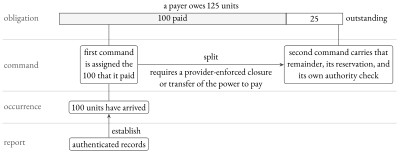
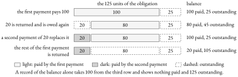
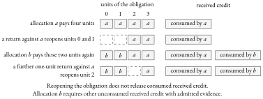

Abstract
A payment provider asked for 125 units confirms 100 and stops responding. The remaining 25 is still owed, but asking again can pay it twice if the first request completes after all. Unless something limits what that request can still do, no rule of the payer’s institution alone is both safe and sure to pay. What is needed is a record of what is owed, kept apart from every attempt to pay it, and an exact rule for when to try again. The rule admits a second request only when the provider has closed the first, transferred its power, or enforces one ceiling on both. Until then the 25 waits as unfinished work, on a record that outlasts the calculation that produced the 125 and the software that holds it. Four companion papers, whose notations the paper takes to describe one record, prove the results it cites. It adds an argument of its own, and its appendix gives the exact conditions the body summarizes and designs beyond the four.
1 The unpaid 25
A payer owes a payee 125 units. The institution that keeps the payer’s records has asked a payment provider to pay it. A provider sometimes carries out a request in parts. Here authenticated records establish that 100 units have reached the payee. Then the provider stops responding. The institution’s record, a balance with a status for the request, shows 100 paid and 25 outstanding.
The natural move is to wait for a time and then ask the provider again for 25. But a timeout says only that a response did not arrive in time. If the provider can still send the remaining 25 under the first request, a second request creates two ways to pay the same remainder, and the payee can receive 150. If the institution holds back, the payee may stay 25 short. Its record is the same whether the provider will still pay the rest or has stopped for good.
Nothing that the institution can ask will tell it which. An idempotency key lets it repeat the first request safely, and a status inquiry tells it what that request has done so far, but the two cases differ only in what the request does next. The institution has to act in a way that is safe in both, or wait. This paper sets out a rule that chooses the institution’s next step from what it has observed. It rests on the commitments that a provider makes about its own behavior. Where a provider commits to nothing, the rule says wait.
The record that the institution has will not do, because a balance with a status has no place for what the open request can still do.
2 Four records for one payment
A status is asked two questions at once, whether the debt is paid and whether the request is finished, which here have different answers. So the debt is recorded as an obligation, the 125 that the payer owes the payee, and the request as a command, one request to a provider to act, here the request to pay the 125.
The 100 needs the same care, because the institution did not see the credit to the payee. It has records of the credit. If each counted as a payment, a second copy would count the 100 twice. What the provider did is therefore recorded once, as an occurrence, and each statement about it as a report of that occurrence. Because two reports of the credit both carry the provider’s identifier for the credit, they describe one occurrence and count once against the obligation.
On the record of the obligation, every unit that was originally owed is paid and not returned, or removed by an authorized cancellation or amendment, or still outstanding. Since the amounts are added, they are stated in one asset, counted in one unit without rounding: Here is the original target of the obligation, the payments, the returns to the payer that are linked to them, the amount so removed, and the outstanding amount. A payment or a return enters the equation only when it is established by a report whose origin has been verified and whose author is entitled to make it.
Here . Every term of the equation belongs to the obligation, and none belongs to a command. Sending a command again, closing it, or adding a second command therefore changes none of the totals [1, Section 5.9]. Neither does the loss of a response. The records do not say whether the open command will pay the rest.
3 When a second command is safe
The institution can send the same command again. A provider that recognizes the command gives its earlier answer and does nothing new, so a retry recovers a lost response and no more (Appendix A.3 gives the conditions on which it is safe) [1, Section 5.12]. A second command, for the 25, is another matter, because the provider will treat it as a new request. The first command, which asked for 125 and has paid 100, still has the power to pay 25. While it has that power, both commands can pay the remainder.
No rule of the institution’s own is both safe, in that the payee never receives more than 125, and sure to get the 25 paid. Suppose that the first command may pay its 25 at any later moment or never, that the provider is free to stay silent, and that no limit is enforced on what the two commands pay together. A rule that is sure to get the 25 paid when the first command never pays must, in that course of events, send a second command that pays, and there is a moment by which it has paid. Now let the first command pay its 25 just after that moment. Up to that moment the institution has seen the same things in both courses of events, and so it has sent the same second command. The payee has 150. A rule can therefore be both safe and sure to pay only with a commitment from someone other than the institution (Appendix A.1 states the setting exactly). Results of this kind are long known for channels that may lose or hold messages without limit. The two generals problem, in which messengers may be lost, is one [5].
The argument needs the first command to be able to pay after the second has. The provider can end that. A closure is an authenticated statement by the provider that the first command will perform nothing further, which the provider then enforces. It has to cover money that the provider has already debited and that has not yet reached the payee. A provider that says only that it will take no more copies of the command, or that its window for the command has ended, has said nothing about money already on its way. A transfer moves the remaining power from the first command to the second in a single step, so that at no moment can both pay. A local timeout is neither, because the provider has stated nothing. Nor can a timer resume a payment that waits: in the paper on payment operations, a program that must wait is suspended and resumes only on evidence of the kind that it declared it was waiting for [1, Sections 3 and 4].
Short of a closure or a transfer both commands stay open. The argument then applies as it stands unless the provider enforces a ceiling on what the two can pay together. With two commands open the cash can be overdrawn, if the debits still possible exceed what the payer can fund. More cash cures that. It does nothing about a first command that can still pay 25 and a second command for 25, which can deliver 50 against the 25 outstanding.
Every command has a reservation, made before the command is sent, of the money that it can spend and the part of the obligation that it can pay, on which no other command may count. The cash capacity is the payer’s cash that is free of other commitments. The performance capacity is what the obligation may still receive, here 25. Both are read from the record as it stands after the 100.
What the two commands may yet do is fixed by the provider’s commitments, here called its contract, whatever legal document carries them. The contract states the most that each command can still debit and pay, and any ceiling that the provider enforces across both. Take every course of events that the contract leaves possible, and every moment along each course. At each moment let be the cash used, and the amount delivered against the obligation, beyond what the record already counts. With one cash account and one obligation, the second command may be sent when where denotes the least upper bound over all of those moments [3, Section 5.2]. The limits must hold at every moment along the way, because money that comes back later cannot fund a debit that comes first.
When the contract says precisely what can happen, the test admits the second command in every case in which neither capacity can be exceeded, and in no other. A contract that allows for more than can happen still gives a safe test, though one that may refuse a command which would have been safe. Where the contract gives each command a ceiling of its own, the second command is refused (Figure 1). If the provider enforces one ceiling of 25 on what the two can still debit and pay, they can deliver at most 25. The second command may then be sent if the payer’s cash covers it.
Until a provider gives one of these commitments, the second command waits. Once the provider gives a closure or a transfer, the second command is sent, and the 125 is split between the two commands (Figure 2). The first is assigned the 100 that it paid, and the second the remaining 25. The money for the 25 is already set aside in the first command’s reservation, which passes to the second. Under an enforced ceiling, where both commands stay open, one joint reservation replaces the two and sets the 25 aside once. In either case the second command has a check of its own that whoever orders it is still entitled to order the payment. The record of the obligation keeps its original target of 125 beside the quantity assigned to each command, and shows 25 outstanding until its payment arrives. The obligation is paid in full when that 25 has arrived and is established as the 100 was, so that and [1, Sections 5.9 and 6].

4 Getting the 25 paid
Nothing so far makes anyone pay the 25. A system can retry the first command every night, move its records to new software every year, and recover after every failure, and never pay. A check that the system is active would pass it every night.
Finishing therefore has to be a requirement of its own [3, Sections 7.7–7.9]. The unfinished work on the 25 is recorded as a task, which names the original work and a fixed goal. For the 25 the goal is discharge, which requires both the performance and its evidence: the 25 must be paid and the payment evidenced, since a payment can have happened before the record can show it. A decision on record would be the wrong goal, since a final refusal of a second command would then finish the work with the 25 unpaid. Because the goal is fixed, renaming the obligation or moving it to new software cannot replace it with an easier one.
The work that remains on a task is measured by its rank, which the system sets under its own rules of service when it records the task. The rank is a nonnegative integer that counts the productive work still to be done. It is zero exactly when the goal is recorded. It need not equal the money unpaid. If any payment counted as progress, a system that each night paid half of what remained would progress for ever and never finish, which an integer measure rules out. For the 25 the rank is 3, for the closure, the second command, and the evidence of payment, each lowering it by one.
Take the tasks that the system holds at some moment, a finite collection that the paper on obligations calls the original cohort, and let be the sum of their ranks. Suppose that the total rank never increases, that whenever it is positive it decreases within the next transitions, for a fixed number , a transition being one step of the system, and that execution continues until completion, with no deadlock while work is unfinished. Then every goal of the cohort is recorded within transitions [3, Theorem 7.15]. The proof is a count. A positive integer total can strictly decrease at most times, and each decrease takes at most transitions. Work that arrives later neither enters the cohort nor resets its count.
The theorem gives a number of steps from an assumption about service. The service has to come from the system and from the provider. By a second bound, if at most steps are allowed between decreases in rank, completion comes within actual steps, counting every move, retry, and recovery [3, Theorem 7.18]. Both bounds assume service that includes the provider’s part (Appendix A.4). Where the provider does not answer, the record shows the obligation as outstanding after its due date, with the open command beside it.
5 Where the 25 is written
While the 25 waits, the calculation that produced the 125 moves on. The 125 was computed under a claim, a record of an economic right or obligation and of the conditions that determine its outcome. A claim has a definite form, by which every party computes the same amounts: a finite program, a schedule of the dates on which the program is evaluated, and payment terms (Appendix A.5) [2]. The claim here is a note of the kind that the companion paper follows, with numbers of its own (Appendix A.6). It pays a coupon in each period, on a condition. In a period in which the condition fails the coupon is missed. It is carried forward and becomes owed only in the first later period in which the condition is met. The program therefore keeps a count of missed periods. When the condition is met it computes one amount for the current coupon and the missed ones, here 125, and resets the count to zero.
After the reset the program’s state says that nothing is carried forward. It holds no trace of the unpaid 25. What is owed is therefore written down when it is computed and kept apart from the calculation, in a journal. An amount that the program computes for a registered holding of the claim becomes an obligation there, as the 125 did. A program that only keeps a count, like the count of missed periods, creates none. From then on the journal alone says what is owed. A partial payment changes what remains of an obligation and leaves the count as it is, so every unpaid amount remains due [2, Corollary 3.3].
An institution that also kept its payments in the program’s state would do worse after a failure. Restoring a copy of the state that was saved before the 100 arrived, it would lose the 100 and find 125 unpaid. The journal and the calculation have to stay in step through the failure of the process that writes them. The store therefore commits together the state of the calculation, the obligation records, the payments, and the outcome of each request made of it. Every change goes through a single writer. For a single store, one database whose commits are atomic, the companion paper proves that a request repeated after a lost answer returns the result retained for it and applies nothing twice, and that a stale copy of the calculation cannot overwrite a payment that arrived after the copy was saved [2, Section 5.1].
The journal retains each obligation as it was computed, each payment occurrence, and each allocation, which assigns part of an occurrence to one obligation. For the case it holds the 125, the credit of 100, and the allocation of the 100 to the 125.
It keeps each payment because money that has been paid can come back. Nothing has been returned in the case. Suppose that 20 of the 100 comes back to the payer. What a return does to the obligation is for its terms to say. They may make the returned amount owed again, or they may leave the obligation paid and create a separate claim for the recovery of the money. Take the first, under which 80 is paid and 45 is outstanding. A second payment of 20 then replaces what came back. The balance again reads 100 paid and 25 outstanding, as it did before anything was returned. Now the rest of the first payment is returned.
A record that keeps only the balance cannot tell how much that is, or check a report that says. It knows the first payment as a payment of 100 and sees 100 paid, so a return of 100 looks right. It then shows nothing paid and 125 outstanding, which is wrong by 20. The first payment had already lost 20 to the earlier return, and 80 was all that remained of it. The 20 that the second payment paid is still with the payee. The right answer is 20 paid and 105 outstanding (Figure 3). The balance could not have given it. It read 100 paid and 25 outstanding before any return, when a return of the first payment would have reopened 100, and it read the same after the replacement, when the return reopens 80.

To get this right the record needs, for each payment, its amount and how much of it has come back, which is what ordinary practice keeps when it limits a refund to what remains of the payment that it refers to. A return is then set against the payment that it names and can reopen no more than that payment still pays.
6 The software is replaced
A debt can stay unpaid for longer than software stays in service. Suppose that the institution replaces the software that holds its records while the first command is still open. New software may store an obligation differently. Say the old held one entry, 125 owed with 100 paid, and the new holds a paid 100 and an unpaid 25 as two.
If the move copies amounts and nothing else, the unpaid 25 arrives as a new obligation with no command attached. The new software sends a command for it. Then the first command, which the old software sent and the provider never closed, completes, and the payee has 150.
An obligation has an identity that is fixed when it is created and does not change with the way software represents it [3]. The two entries in the new software are then two portions of the one obligation of 125, to which the open command still belongs. A change of representation has to be authorized and has to meet conditions [3, Section 7]. The new entries must cover the whole of the old record, without overlap, and preserve the rights attached to each portion: who owes it, to whom, in what asset, when, and on what conditions. The change takes effect in a single atomic step, which stops the old software from starting new work and activates the new. The open command keeps what was set aside for it and stays with its portion of the obligation, and its late result is applied once, to the same 125.
Something has to refuse a move that breaks these conditions, as it has to refuse a request to mark the 25 paid without evidence. An engine does this. Before it accepts a change it checks the request, the authority behind it, the evidence, and the current state. A request that it refuses, or that awaits evidence, is added to the recorded history and changes nothing else. A change of representation which meets the conditions above preserves every paid and unpaid amount with its rights [3, Section 7].
7 What is proved and what is new
Each result of the four papers is proved in its companion paper under its stated conditions, which concern evidence, authority, storage, scheduling, and the provider’s commitments. This paper takes the four to describe one record, through the dictionary of Appendix B.
What this paper adds to the four is the argument of Section 3 and the designs of Appendix A. The designs concern who describes what commands can still do, where the limit on what an obligation may still receive can be kept, an agreed excess with its collateral, where the assumption about service can come from, what the record shows at a date, the rule on lateness, and who brings a command to the bank and how its identity is computed.
The storage results concern a transaction in a single store. Appendix A.9 follows the record onto a ledger that several institutions run together as its validators [4].
Most of what the companion papers use is used as it is: keys that make a repeated request safe, a record of what is to be sent that is written with the change that requires it, sequences of local steps with compensating steps, logs of events from which state is rebuilt, and double-entry ledgers. So are agreement among replicas of which some may lie [6], atomic commitment [5], typed checks before execution, ledgers whose pending transfers lapse, and contract languages and standards that carry the events in the life of a contract. The papers add two things. What an open command can still do is a recorded quantity, with an exact test for a second command, and an obligation keeps its identity, with its open commands, through a change of software.
A Exact conditions and further results
This appendix gives, in the order of the sections, the exact conditions that the body summarized and the results of the companion papers that the case did not need. Passages marked as design go beyond the companion papers. The companion papers call evidence, inputs, and programs that have passed the checks required of them admitted, and that word is used below. Authority, there and here, is the entitlement of a named party to do a named thing.
A.1 The joint test
The paper on obligations calls a second command that is sent while the first is still open a replacement, and it calls the test of Section 3 the exact joint replacement bound [3, Section 5.2]. The test covers a scope of commands. The scope must contain every old command and every candidate command, meaning every command proposed for acceptance, that shares the affected cash or performance capacity. It includes their in-flight effects, which are effects that the commands have begun or completed and that the balances do not yet show.
Money in transit is such an effect. Take one cash account and one obligation in one unit, as in Section 3, and suppose that the provider confirms that the first command will debit nothing more, while 25 that it has already debited has not yet reached the payee. That 25 is already in the balances, and the second command would use 25 more. Taken at one moment of account, the two commands can still use 25 of cash and deliver 50 against the 25 outstanding, and the second command is refused. This is why a closure has to cover money already on its way.
Balances lag behind events, so both capacities are measured at an accounting cut, the recorded point that specifies which effects the balances already include. In the case, the cut falls just after the 100 was recorded. Cash capacity is cash after commitments outside that scope. A negative difference remains a funding deficit, and acceptance requires nonnegative baselines, that is, nonnegative and at the cut. Performance capacity is the obligation’s remaining authorized performance. Performance that has been observed and is still pending can already occupy part of this capacity before legal discharge is established.
The description of what the commands can still do covers every possible continuation at every point, the intermediate points as well as the endpoints. A debit that is already booked at the cut must not be subtracted again, while an effect that has occurred and is not yet reflected in the balances remains in the description. Each quantity retains its own unit, and when there are several accounts and several obligations, each receives its own coordinate test.
For an exact description, the two inequalities are necessary and sufficient for keeping the unused part of each capacity nonnegative. A larger sound set, a description that contains everything that can happen and possibly more, supplies a sufficient test that may refuse a feasible replacement. Adding separate command ceilings gives such a conservative sufficient test. It needs no assumption of statistical independence, because the sum bounds the total however the commands behave in relation to one another. A tighter bound requires an enforced joint constraint, such as a shared provider ceiling, and coordination that is merely expected supplies none.
On acceptance, the registry of reservations replaces the scope’s existing reservations with its joint reservation in one atomic operation. That operation must count the quantity once, retain the commitments outside the scope, and bind the replacement to the same dependencies, which are the facts on which the bound rests, such as the provider’s ceiling. What a command can still do is its remaining exposure. A closure that the provider enforces can reduce it, and the provider’s silence does not justify a reduction.
The argument of Section 3 that no rule of the paying side is both safe and sure to pay has this exact setting. An obligation of 125 has received 100. The first command can still deliver 25 through a provider that may deliver at any moment or never and need not answer. A second route delivers any command that it is given. A rule chooses the paying side’s next step from what it has observed. The statement is that no rule both never lets more than 125 be delivered and, whenever the second route works, gets 125 delivered in a finite time, and that this is so even if the paying side is told the first command’s true status at every moment. The proof compares the run in which the first provider delivers nothing and says nothing, for ever, with a run that is the same up to the moment by which the second route has delivered its 25, and in which the first provider delivers its 25 just afterwards. The argument concerns rules that act only on what the paying side observes, where nothing bounds what the first command can still do. It uses three things, and a commitment has to remove one of them: that the first command can still deliver after the second route has, that what the two deliver adds up, and that delivering more than is owed is forbidden. The commitment is therefore something that ends the first command’s power to deliver, or one limit across both commands, or an agreement that allows a bounded excess and requires its return. A local timeout is none of these.
A.2 Design beside the joint test
A payment route declares a small model of its commands, which lists each step that a command can take, with the cash and the credit to the payee that the step adds, and any ceiling that the provider enforces across commands. The test then takes the largest cash used and the largest amount credited over every course that the model allows. Where a route declares nothing, the description is the sum of what each command can do, and the second command for 25 is refused, because 50 could be credited against 25.
The test of Section 3 has two limits, the payer’s cash and what the obligation may still receive. Section 3 asks the provider in the middle to keep both, and the second command waits when that provider is silent. The second limit can instead be kept by the institution that credits the payee. That institution holds, for this obligation, the amount that it may still credit, and it makes credits final one at a time. When it makes a credit final it credits no more than that amount, lowers the amount, and holds anything over for the payer. An arrival that is still waiting reserves nothing. Where that institution is the only place at which the obligation can be credited, and while the amount owed stays as it is, no final credit takes the total above the amount owed, whatever the paying side and the payment systems do. If the first command’s 25 arrives after the debt has been paid, it is held for the payer.
When seven things hold together, the remainder is credited within the route’s time and the institution’s processing time after a further command for it is sent at the end of a wait. One institution holds the whole of what may still be credited. The amount owed does not change, and nothing already credited is returned, while the attempt runs. The route delivers the command’s amount in full, in the obligation’s own unit and net of fees, within a stated time, as funds that the institution is free to credit at once. The institution credits such an arrival up to its limit within a stated time, and holds for the payer only what is over the limit. It states its position in sequence within a stated time: what it has credited net of returns, what it holds, and which commands it has finished with. The payer has cash for the further command and sends it when the wait ends. The times are measured on one clock. Where the further command’s own funds are held for screening or under an order, the hold is reported, no further command is sent, and no time is promised.
In the case, 125 is owed and 100 is credited. After a day’s wait a second 25 goes by another route and is credited the day after. A week later the first 25 arrives. The receiving institution finds that nothing more may be credited, and holds it for the payer.
The design keeps the whole limit at one institution. A limit that several institutions or accounts share can be kept so that the total is never exceeded, but a payment that reaches one of them is credited only up to that one’s share: with 10 at one and 15 at another, a 25 that reaches the first credits 10 and leaves the debt 15 short.
The second design is the third kind of commitment named in Appendix A.1, for a debt whose amount does not change while a command is open. The terms of the debt may state an amount, zero unless the parties set it, up to which the payee undertakes to hold anything received beyond what is owed and to return it. A second command may then be sent at once if two tests pass together. First, what has been credited, what every open command can still deliver, and the new command are together within what is owed plus the agreed amount. An excess that has already arisen uses the agreed amount up. Second, the worst excess that could then arise is reserved in collateral set aside for the purpose. Each unit of collateral covers one exposure at a time. A reservation is lowered only as far as the exposure that remains, which is the excess already credited and not returned plus the most that open commands can still add. It therefore falls when an excess is returned and the return is evidenced, or when a command is shown to be unable to credit anything more. A promise to return lowers nothing. In the case, with 100 credited and a first command that can still deliver 25, an agreed excess of 25 admits a second 25 at once. If both arrive, the payee holds 150 and 25 is recorded as owed back. A third 25 is refused.
Both tests are made against the amount owed when the second command is admitted. If the amount is reduced while both commands are open, the excess can pass both the agreed amount and the collateral. With the 125 cut to 100 by a ruling and both commands delivering, 50 is owed back against collateral of 25. An excess is recorded as owed back only when the credits are evidenced. For payments that do not use such a term, the rule of Section 3 stands as it is.
A.3 The retry and the program that carries the payment
The retry of Section 3 is safe if it is the same command in its canonical form, the one agreed encoding of its contents, with the same key, and if the provider enforces its protection against duplicates throughout the complete interval in which a copy can still be delivered [1, Section 5.12].
In the typed program of the paper on payment operations, each instruction declares the kinds of values, permissions, and resources that it consumes or produces [1, Sections 3 and 4]. The paper writes the program that carries the payment in a small typed language called Op and checks it before the program runs. The core of the language is finite and has no loops, so the check examines every path. A command to the provider is a resource that cannot be duplicated. The program uses it once, a retry included, since a retry creates no second command, and still holds it while suspended. Every path to a payment, or to any other change of a record, passes the screening required of the parties, such as a sanctions check.
A.4 Service bounds, provider readiness, and repeated completion
On the assumptions of the first bound of Section 4, if the task of the 25 is the whole cohort, with rank 3, and is 10, its payment is recorded within 30 transitions [3, Theorem 7.15].
The second bound of Section 4 is the concrete bound of the paper on obligations, and it has these conditions [3, Theorem 7.18]. While work is unfinished, every state must have a successor. Each actual transition during unfinished work must either lower the rank or preserve it, and a transition that preserves the rank must strictly lower a bounded counter for intervening work, which never exceeds . Migration, retry, and recovery steps all count. Only a decrease in rank may reset the counter, and a bounded counter that resets without a decrease in rank supplies no bound. Completion then comes within actual steps. The paper writes for the total that is written here, where already stands for the returns of Section 2.
A task need not have discharge as its goal. Other tasks have a decision as their goal, such as the engine’s final ruling on a request, and for them an authenticated refusal can be the completion.
The provider’s part of the work has prerequisites of its own. A payment route can require a reservation, an authenticated command, and the provider’s evidence of the occurrence before the journal records discharge. A completion contract guarantees that such a persistent prerequisite fact is established within a stated time once the facts that it depends on hold [2, Section 6]. The contracts must be jointly valid: they must hold together under the same plan, authority, evidence, reservations, and clock. Along a finite acyclic graph of prerequisites the contracts compose, and each fact has a bound on the time by which it is established. For a finite graph that may contain cycles, ordinary completion contracts wait for every predecessor. A provider that pays once funds are reserved, and a reservation that is made once the provider has accepted the command, wait for each other. Readiness then has to start from seeds, facts that an external guarantee establishes without waiting, as prefunding can establish the reservation. Without a seed, a cycle can wait forever for itself. Under these guarantees, external seeds ensure complete readiness if and only if the seeded facts meet every directed cycle, so that each cycle contains a seeded fact. Treating a cyclic group as one component requires a joint completion contract for that group. Combining provider readiness with the service bound of Section 4 requires compatible authority, evidence, and resources, and one declared clock on which both bounds are stated.
Two further results concern a system with a fixed finite set of reusable slots, each of which holds one task at a time [3, Propositions 7.16 and 7.17]. The first is a monitor that checks repeated completion. Each task remains attached to its slot until its goal is recorded, and a slot must visibly clear before it is reused. The monitor keeps a pointer to one slot and advances the pointer when it observes that slot clear. It records a fresh pulse when a round finishes, which is when the pointer passes from the last slot to the first, and the pulse is the signal of repeated completion. Returning the pointer to its starting position is insufficient, because a pointer that rests there is consistent with an unfinished task in that slot.
The second is a finite control game, which combines a model of execution with the monitor’s pointer and completion pulse. The game has two players. At each state the controller selects an available action, and an adversary then selects one of the successor states that the action permits. Both players observe the complete state. The game identifies the states from which the controller can keep execution safe and force infinitely many fresh pulses. A deadlock is a loss for the controller, and a completed state that idles needs an explicit transition back to itself.
Design.
For the system’s own steps, the assumption of the two bounds can come from service that is reserved for a deadline when the obligation is admitted, or from terms that limit how many deadlines may fall together. Fairness alone gives no bound: with 101 deadlines at once and 10 served at a time, a promise of 10 steps fails. Reserving service limits what the system promises. It never refuses a debt and never moves a due date. For the provider’s part the assumption can come from named commitments, each with a time, which the companion paper on calculation composes along a path of prerequisites [2, Section 6].
The record also says where each obligation stands at a date. By the due date, plus any grace, plus the system’s own bound for acting on a deadline, the record shows these things for each obligation, each true to the evidence that it holds and each kept apart from the others. The amount: fixed, or conditional on a named condition that is not yet met, or awaiting a named input from a named party or forum, with the amount asserted beside it. The due date, and whether it has passed. Payment: credited and evidenced, with its value date, or not evidenced, with the party whose evidence is awaited. Any restriction, with its source. The commands still open. Any charge for lateness, marked provisional while it rests on missing evidence. That date is promised only for an obligation that was admitted before its due date, with its service reserved then. An obligation first admitted after its due date has no promised date, and the record shows it as overdue, or as awaiting its input, from the moment it is admitted.
A payment made on time and reported late looks, on the day, exactly like a payment not yet made. The record calls neither late on that ground. It says that payment is not evidenced, and a charge that the terms attach accrues provisionally and is corrected when the value date arrives. Suppose that the 25 was due on day 2, with one day of grace and a charge of 1 per cent a day on what is late. A provisional quarter-unit has accrued by day 4. If the credit turns out to carry the value date of day 2, the charge is corrected to zero by a linked correction, which in the companion paper on calculation records the difference and leaves the original standing. If it carries the value date of day 5, the charge is one half. Showing that a correction is pending is one unit of work. The terms name the event that counts as the payer’s performance, here the final credit to the payee’s account at the value date of that entry. For each interval of lateness one party answers to the payee, and any other party answers by indemnity to the one who paid.
A.5 The claim and its program
Section 5 gave the three parts of a claim: a finite program, called its payoff program, an evaluation schedule, and payment terms [2]. To resolve the claim on a scheduled date is to evaluate the program on the admitted inputs for that date, and the payoff is the amount that results. A position binds a quantity of the claim to the relevant parties and financial context, so that it records who holds how much of the claim. A payoff that is resolved for a position becomes an obligation, and a computation that has no position, such as the count of missed coupons, creates none.
The language of payoff programs combines constants, observations, earlier resolved values, arithmetic, comparisons, and conditional choices. A cap limits an amount, and a floor supplies a minimum. Because the language is this small, what it can compute is known exactly. A function is finite piecewise polynomial when it is given by finitely many polynomial formulas, each selected on a region that polynomial comparisons describe. A capped amount is an example: one formula applies below the cap and a constant above it. The exact expressiveness theorem states that the language represents precisely these functions, and conversely that each of them can be constructed in the language [2, Section 2.3]. Two features are admitted by separate results with conditions of their own: payoffs that read a bounded window of past values, and schedules that recur.
Numbers alone would let a program add amounts in two currencies. Each value therefore has a financial type, which records its dimension, such as a currency, and its context, such as when an amount is payable. Equal numerical values cannot silently convert an amount from one currency to another. A currency conversion needs the declared rate, the evidence for it, and the context of the conversion. The program calculates the amount under those declarations.
Evaluation also needs an order in which each value is computed before it is read, because a claim can read a value that another claim resolved. Ordinary historical references, which read values resolved on earlier dates, point strictly backward in the evaluation schedule, so the schedule supplies the order. An extension permits computations within the same event, on one date, to supply one another, as when a fee is computed from a gross amount and a net payment from both [2, Section 4.3]. A computation that supplies an input to another computation is a producer, and the extension requires a complete, checked dependency graph of the producers that establishes an acyclic order.
A missing observation suspends the claim that needs it while an unrelated claim that is ready resolves. In some cases a smaller set of observations already fixes the numerical answer [2, Section 4.4], as when a condition that is already known selects a branch that does not read the missing input. Even in those cases the evaluator still requires its mandatory financial evidence.
The resolved amount, the market price of the claim, and its payment remain separate. Price concerns what participants exchange for a position under a model of valuation or trading. Resolution concerns what the admitted program computes. Payment concerns performance against the resulting obligation. A move in the price pays no coupon, and a resolved coupon need not yet have a payment receipt. Keeping the three separate permits a claim to retain its payment history while its price changes.
A.6 The coupon example
The companion paper’s example of a count that resets is a coupon with memory [2, Sections 2.2 and 3]. The coupon is 10 units. At each scheduled observation a trigger, a test on the value observed on that date, either fails or succeeds. A failure adds one to a count of consecutive missed coupons. A success resolves the current coupon together with the accumulated misses, and then resets the count. Starting from a count of zero, the trigger sequence gives:
| Observation | First | Second | Third | Fourth |
|---|---|---|---|---|
| Trigger | 0 | 0 | 1 | 1 |
| Resolved coupon | 0 | 0 | 30 | 10 |
| Miss count afterward | 1 | 2 | 0 | 0 |
The third observation accounts for three coupons: its own and the two that were missed. Resetting the count prevents those missed coupons from entering the fourth payoff again. The companion paper’s Proposition B.9, No missed coupon enters two resolved payoffs, proves that property for the pre-issued family, in which every coupon claim is issued before the first observation. Its conclusion concerns the calculation of payoffs, and the 30 can still await payment.
Now one payment occurrence of 35 units is admitted. It is compatible with both obligations, being in their asset and between their parties, and 30 is allocated to the first payable obligation, the earlier one, and 5 to the second. The outstanding amount is 5 although the miss count is zero. The journal retains the original 30 and 10, the payment occurrence, and both allocations. Neither another evaluation nor a restart of the process may reconstruct the outstanding obligations from the zero count alone. The same paper’s Corollary 3.3 states the general fact: a successful trigger creates an obligation that does not change afterward and resets the count, a partial payment changes what remains of that obligation and leaves the count as it is, and every unpaid amount therefore remains due.
The durable commit of Section 5 covers calculation state, obligation records, payments, and the outcome of each request, through one write authority, the single writer of that section [2, Section 5.1]. It has two properties: a repeated request returns its retained result, and a stale checkpoint, a saved copy of the calculation, cannot overwrite a payment that arrived afterward. They rely on the specified atomic storage operations, an authenticated state, complete bindings of each request to its contents, and the stated restart rules.
A.7 Payment history on four units
The paper on obligations keeps more than the example of Section 5 requires. For each unit of the obligation it keeps which payment paid it, which return reopened it, and which payment paid it again, because units of one obligation can carry different rights, as when two parties hold parts of one debt.
The companion paper works the history of Section 5 on four units [3, Section 7.5]. Payment history matters even when quantities are small. Suppose allocation pays four units, numbered 0 through 3. A return against reopens units 0 and 1, and allocation pays those two units again. A further one-unit return against must concern its remaining discharge, beginning with unit 2. It cannot reopen the units of the replacement payment, and the current balance alone cannot answer which earlier payment is being returned.
The money has a history of its own. The received credit behind a payment consists of identified portions of an admitted external credit, and the allocation of the payment consumes the portions that it uses. A return sends money back to the payer and leaves those portions consumed: reopening the obligation does not release them. Allocation therefore requires other unconsumed received credit, with admitted evidence of its own, as the second payment of 20 did in Section 5. The units of the obligation and the portions of received credit thus have separate histories, and Figure 4 follows both.

A separate record for every unit would make storage grow with the amount. The paper represents consecutive portions as intervals while retaining their order and their separate return histories, and its refinement theorem shows that expanding those intervals reproduces the corresponding execution on individual portions. A monetary quantum is the smallest permitted quantity, and the interval representation avoids enumerating each quantum. Its cost depends on fragmentation, on history, and on the size of the representations of quantities. The refinement theorem rests on one authenticated store whose changes are applied in a single order, and on a common write mediator through which every change passes.
History costs storage, and the example of Section 5 shows when some of it may be discarded. The state before any return and the state after the replacement have the same balance and answer the last return differently. Keeping today’s balance unchanged is therefore not enough. The paper states the rule on discarding records as a relation between two states [3, Section 6.3]. A continuation is a later sequence of operations that the system accepts, and the protected observations are the outputs that the system is bound to preserve. Two states are future-equivalent when every continuation produces the same protected observations from both. The continuations include returns, corrections, refusals, and the restoring of archived records, when those operations are accepted. A certificate, meaning checkable evidence for a specified statement, can establish future equivalence for a complete finite model that is supplied in full, including its declared vocabulary of inputs. Adding a new operation requires the interface, which is the set of operations and outputs that the model declares, to be checked again, because the new operation can distinguish states that the old operations treated alike.
A.8 Changes of software
The engine of Section 6 is shared by every kind of claim. The paper on obligations calls a kind of claim, such as a bond, an insurance policy, or a trade receivable, a family [3]. The family’s interface keeps the claim’s own rights, conditions, and permitted changes, and the shared engine checks requests, authority, evidence, and the current state before it accepts a transition. The engine’s preservation theorem starts from a state that satisfies the family’s invariant, the property that the family’s transitions are required to maintain. It assumes both the family laws and the engine laws, the requirements that the paper places on each, including that changes are applied one at a time in a single order. Refused or awaiting decisions that are newly committed extend the recorded history without mutating the protected private state, which is the claim’s own record of rights and amounts. An exact retry returns its existing receipt, the recorded answer to the request. Accepted requests must preserve the invariant. The instruments thus retain their distinct rights and conditions while they share the machinery of acceptance. A balance and a settlement flag alone cannot express those distinctions.
The paper calls an authorized change of representation carriage. A change of payee or of priority is a different kind of act, an economic amendment, which amends the obligation itself and needs its own authority and its own rules. Its example of carriage is a 100-unit obligation with 60 discharged and 40 payable [3, Section 7]. It can acquire two positions in one successor representation without becoming two new obligations, and carriage preserves obligations through authorized splits and regroupings of this kind, under the conditions of Section 6. In the paper’s terms, one serialized commit bars new execution under the old binding and activates the successor.
An unresolved calculation needs more than a partition of today’s balance, because what has to be carried includes a computation whose result does not exist yet. The paper gives a narrower construction for that case [3, Section 7.6]. It applies to two authentic programs, the source in service and its successor, admitted by the same typed payoff evaluator. The programs use identical evaluation settings and identical contracts for observed inputs, the stated conditions that an observation must meet. They have the same claim names in the same order, and the same schedules, declarations, instruction graphs, output types, and deadlines. Their bindings of execution authority, scope, and purpose also agree. Their partitions of positions, given in positive rational quantities, can differ, with equal totals within each claim and within each group of unchanged economic fields. Those fields include issuance, lot, parties, asset, terms, evidence, and the governing and payment contexts. Currency conversion, resolved-rate references, and external conversion witnesses are excluded.
The source program remains the authority, and the successor runs beside it. Under one exclusive write authority and declared resource limits, both computations receive the same accepted requests. Their observation histories are compatible when they are prefixes of one admitted refinement history, in which missing inputs can arrive, replacement evidence narrows rational intervals, and exact observations remain immutable. When both computations resolve an instance, which is one scheduled evaluation of a claim, their numerical values agree. Only the source creates obligations in the journal, while the successor computes a correspondence to them. The construction preserves future calculation for the stated class of programs.
A payment alias links a successor position to selected portions of original obligations, so that payments addressed to that position can discharge those portions. Installing an alias requires additional checks: of a positive outcome, of the quantum, and of the current history.
A.9 The record on a ledger that several validators keep
Sections 5 and 6 supposed one institution that keeps the record, in one store with a single writer. A record on which several institutions rely may instead be kept by several of them, so that it rests on no one of them alone. The companion paper on agreement treats the case in which they run one ledger together as its validators, each holding a copy [4].
Take four validators, and suppose that the report of the 100 has reached three of them. One of the four may be faulty and tell different things to different peers, and the four cannot wait for the payment to finish before they agree. If each acted on its own copy, the fourth, which still shows 125 unpaid, could send a command for all of it, and each of the other three could send a second command for the 25. The 100 could then be paid twice, by the first command and by the fourth validator’s. The 25 could be paid five times, by the first command, which is still open, by the fourth validator’s command, and by each of the other three.
The companion paper gives the four one common record, a ledger. Its protocol is Byzantine fault tolerant: the validators agree despite a bounded number among them that may send false or inconsistent messages [6]. For four validators the paper assumes that at most one is faulty. Three signatures then form a quorum. The ledger advances in blocks, each one agreed batch of changes. A block is confirmed when the protocol’s agreement on it is complete.
The validators come to the same facts through signed evidence. At a set deadline each validator closes its collection of evidence by signing it. Evidence that arrives later waits for the next collection. A block is built on the closed collections of a quorum and includes every report that a quorum acknowledged before closing. The fourth validator therefore takes the report of the 100 from the block. A faulty validator cannot keep that report out. It cannot invent one either, because a report must carry the provider’s own authentication. A report that fewer than a quorum had acknowledged by the deadline may be left out of the block, and its absence is not proof that nothing happened.
The block records the payment as it stands, unfinished. For a payment that a provider makes outside the ledger, the committed state retains the observed performance, the allocations, the outstanding obligations, the reservations, and the commands still open. In the case that is 100 observed, 25 outstanding, and one command open.
From then on no validator acts on its own copy. A command is recorded in a block, and the companion paper fixes its identifier before it is sent, from its plan, its leg, its attempt, and the exact request. The command goes to the provider only after the block is confirmed, from a sender that is entitled to send it at the time of sending. The configuration of each route names the sender. Whoever sends it, and however often, each sending is the same command, to which the provider’s contract gives one effect. One effect means one debit under one identity, which rests on two things: the provider recognizes the identity for its whole window, and it refuses any request under that identity once the window has ended. It also means no double credit to the payee, which is the test of Section 3. A different command for the 25 needs a later block, which admits it only within what the open commands leave of the 25. The validators therefore cannot each count the same 25 as theirs to pay. Replaying a confirmed block recomputes the recorded decision and sends no payment.
The ledger’s own guarantees hold whatever the provider does [4, Sections 3–7 and 9]. Honest validators never confirm different records for the same block, which is agreement. The next block is confirmed, pending payments included, which is ledger progress (Appendix A.10 lists the conditions of each). The ledger can therefore go on confirming truthful pending states while a provider is unavailable. The completion of the payment itself, which the paper calls external completion, is a separate result. It depends on the provider, on funds and current authority, and on handling under which no command and no report waits forever. A confirmed block establishes the agreed record, and the payee’s receipt of the money requires evidence of its own.
Design.
A validator has no authority over a customer’s bank account. The instruction has to reach the bank from a party that the bank will take it from, which is the bank itself where it is the paying institution, or the holder of the account holder’s signed instruction. The configuration of each route names that party and its successors. A successor presents the same command under the same identity and never creates a new one. An identity that every party derives alike is computed from the identifier of the confirmed decision, the domain of the authority that made it, the command’s place in the decision, and the digest of the request in one agreed encoding. The request binds the amount, the asset, the payer’s account, the receiving address, the obligation, and an execution window. Nothing that differs between two valid proofs of the same decision enters the identity. Where a payment system’s reference is shorter, the issuing authority keeps a register from reference to identity. A limit kept where the money is credited, as in Appendix A.2, protects against a double credit and not against a double debit.
A.10 The agreement protocol in the four-validator example
When several participants maintain the ledger, their common record must include reservations as well as event decisions and the resulting obligations [4]. The companion paper’s own example also has four validators, of which at most one is assumed faulty, so that three signatures form a quorum. An instruction is a request that a participant submits to the ledger, and the instruction of the example calls for a local transfer of seven units, a transfer within the ledger, if an event resolves yes.
The order is fixed first. A validator that could read an instruction before its place was fixed could put an instruction of its own ahead of it. Instructions are therefore encrypted when they are submitted, and the preceding confirmed block fixes the encrypted instruction order. The validators can then collect event evidence while they obtain the decryption contributions for that fixed order, each validator contributing its share of the decryption.
At the configured deadline each validator closes a finite collection of the evidence that it has admitted: it signs the collection, and evidence that arrives later is carried forward to a later one. Evidence that a quorum acknowledged before closing appears in the closed collections of every quorum, and so in every block, and every provider report must carry the configured identity and authentication of its source. The signed collections support a complete accepted-or-deferred decision for each candidate event, which is an event that an ordered instruction depends on. A missing response does not become proof that no event occurred, and a closed collection supplies the recorded basis for deferral. A certificate is checkable evidence for a specified protocol statement. An agreement protocol of this kind votes in phases, and agreement uses the chosen protocol’s complete commit proof and its rules for a safe change of leader. An intermediate preparation certificate is insufficient.
The next block commits the accepted event, the clearing decision, the instruction receipt, and the resulting state together. Clearing computes what each party owes under the configured rule, which here yields the transfer of seven units, and the instruction receipt records what the ledger did with the instruction. A failed group of local transfers leaves no partial write of the group. For external payments the committed state instead retains what Appendix A.9 lists, and provider facts enter independently of whether a later instruction succeeds.
Two further cases belong to the design of the clearing layer. A licensed venue can register trades that it matches outside the ledger’s own book, using its own trade identifiers, and the same clearing rules then apply. A product fee is a due like any other, charged on the closed amount in the trade’s settlement currency. A governed schedule names its payees, and the fee stays separate from principal and from customer collateral.
An atomic ledger update changes the complete state together, and external providers retain their own execution and finality rules. Dispatch, the sending of a command to a provider, requires confirmation and authority at actual use, and replay recomputes the recorded decision without sending another payment. A command’s identity is fixed before dispatch, and a retry retains it. The provider’s idempotency contract, or an authoritative reconciliation of occurrences, establishes that the command takes effect once. A new command for the same obligation requires authority, funding, and performance capacity that is unused across every command that serves the obligation. Historical first completion also remains distinct from current performance after a return: the return lowers the current performance of an obligation and leaves the record of its first completion as it was. Dispatch and delivery are fair when no command that can be sent and no observation waits forever, and the cryptographic contracts are the stated guarantees of the cryptography, such as that a signature cannot be forged. The three guarantees have the following conditions.
| Guarantee | Relies on |
|---|---|
| Agreement | the fault bound, deterministic validation, cryptographic contracts, and the underlying consensus protocol |
| Ledger progress | additionally, eventual recovery of communication, retained instruction bodies and decryption service, finite closure of evidence, and terminating execution |
| External completion | funded resources, current authority, provider responses, fair dispatch and delivery of observations, and a recovery process that makes finite progress |
B Where each result is proved
The companion papers use their own words for some of the things named here. For the thing owed, Op speaks of an intent and its target, The Claim as Primitive of an entitlement, Admissible Obligation Transitions of a duty, and Event-Collect BFT of an obligation. The entitlement of The Claim as Primitive is the record of an obligation, created when a claim resolves, and the journal of this paper is, in that paper’s terms, the entitlement records, the register of receipts, and the journal of payments applied to each entitlement, taken together. That paper also uses “command” for a request made of its store, which is called a request here, and it uses “discharge” for the record of payments against an entitlement, where here discharge is a goal, paid and evidenced. Event-Collect BFT calls what a command can still do its command exposure. Admissible Obligation Transitions calls a task a service episode and writes for the total rank.
- Payment and authorized execution.
-
For Sections 2 and 3: Op: Compliance-Carrying Operations, Sections 3–4, 5.1–5.12, and 6–7. Payment-intent conservation in Section 5.9 gives the accounting rule and the 125-unit example. Finality separation in Section 5.7 governs what the record states about external facts. Section 5.12 states the separate premises on which a retry to the provider is safe.
- Payoff calculation and persistent obligations.
-
For Sections 4 and 5: The Claim as Primitive, Sections 2–6, Proposition B.9 and Corollary 3.3. The exact expressiveness theorem fixes the domain of the language. Durable retry and conservation (Theorem 5.2, Section 5.1) states the storage result. Section 6 separately composes jointly valid provider-completion contracts, using dependency paths and named clocks.
- Continuing obligations and useful service.
-
For Sections 3, 4, 5, and 6: Admissible Obligation Transitions, Section 5.2 (Exact joint replacement bound), Section 6.3 on complete future equivalence, and Sections 7.2–7.9. Theorem 7.15 gives original-cohort progress, Propositions 7.16–7.17 the finite monitor and game, and Theorem 7.18 the concrete step bound. Theorems 7.8 and 7.11 cover interval execution and structural continuation.
- Agreement and external completion.
-
For Appendix A.9: Event-Collect BFT, Sections 3–7 and 9, especially Atomic event transition, Ledger progress, and Useful external progress. Section 11 constructs certified compatible allocation within a closed batch and a fixed history. Section 12 separates disclosure history from current performance. The five-round bound in Section 8 applies to its specified class of protocols, those with double certification at the same height.
References
[1] Raeez Lorgat. Op: Compliance-Carrying Operations. November 2026.
[2] Raeez Lorgat. The Claim as Primitive. 23 November 2026.
[3] Raeez Lorgat. Admissible Obligation Transitions. November 2026.
[4] Raeez Lorgat. Event-Collect BFT. November 2026.
[5] Jim Gray. Notes on data base operating systems. In Operating Systems: An Advanced Course, Lecture Notes in Computer Science 60, pages 393–481. Springer, 1978.
[6] Leslie Lamport, Robert Shostak, and Marshall Pease. The Byzantine generals problem. ACM Transactions on Programming Languages and Systems, 4(3):382–401, 1982.